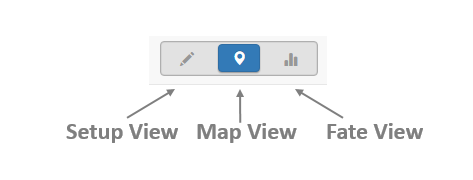
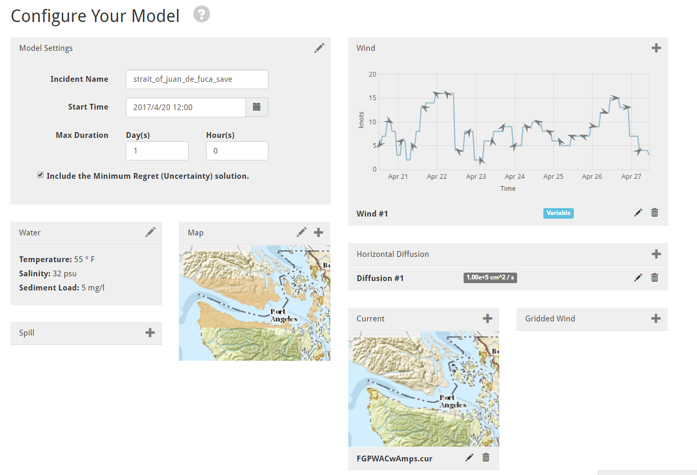

Getting Started¶
There are multiple ways to get started using WebGNOME. For example, various wizards are available that guide users through setting up a scenario. In this case, users will be prompted to answer a sequence of questions. Users can also choose a Custom Setup and load and enter all input data manually.
Specialized interfaces (or wizards) are available for setting up runs that consider oil weathering only (with an interface similar to the well known NOAA ADIOS2 model), for setting up runs that include assessment of response operations (the Response Options Calculator Wizard), or for using Location Files. More information on these different ways to use WebGNOME is found in subsequent sections.
Switching between Model Views¶
The WebGNOME application also has various “Views” for setting up and viewing the spill scenario. To switch between Views in the model, the icons pictured below are always found on the top right of the Menu Bar.

- To make modifications to the model setup, switch to Setup View.
- To view the oil budget, switch to Fate View.
- To view the oil trajectory, switch to Map View.
Using Setup View¶
Setup view is used to interact with the model components, e.g. the map, the “movers” (physical forces like winds and currents which move the spill), and the “weatherers” (processes that change the mass or other physical/chemical properties of the spill).
Within Setup View a number of panels are used to interact with these various components. These panels can be used to change basic model parameters (e.g. the model start time or run duration within the “Model Settings” panel) or to load or create movers (e.g. the “Wind” and “Current” panels). If a Location File Wizard is used to get started, these panels may be auto populated. Users can then use this View to make edits to the model parameters.
Note that if the model was initially set up using the Fate or Response Options Wizard, clicking Setup View will return the user to that more simplified interface.
Within panels in Setup View are icons to Create components (+ symbol), edit components (pencil), and delete components (trashcan). In some panels, multiple components can be added. For example, if more than one data source for winds or currents are available. Once created, components will show up in a list at the bottom of the panel. The Edit icon can then be used to modify parameters unique to that component (e.g. in the case of a wind or current, parameters include being able to turn the mover on/off in the model run or to extrapolate the data).
Timeline Graphic (Under Development)¶
The timeline at the bottom of the Setup View page is provided to help make sure movers and spills are in sync with the model run time. For example, when loading in data for currents or winds, this visual shows the start and end time for the data with respect to the model start and end times. It can be very useful for diagnosing model run time errors related to time mismatches.